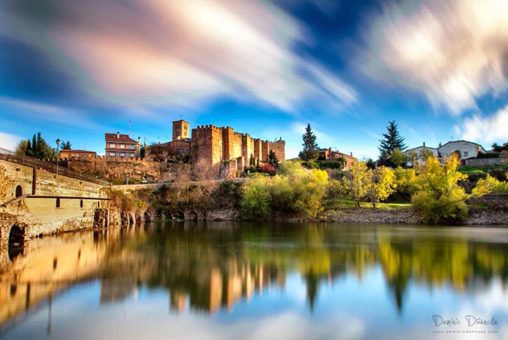
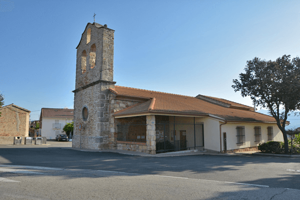
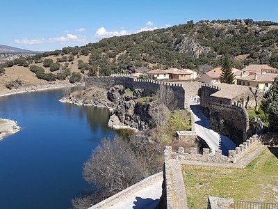

Corazón de la Sierra Norte de Madrid
Manjirón es un rincón privilegiado de la Comunidad de Madrid, cabecera del actual municipio de Puentes Viejas. Sus orígenes se remontan a la repoblación cristiana tras la Reconquista, formando parte de la histórica Comunidad de Villa y Tierra de Buitrago.
Durante siglos, estuvo bajo la jurisdicción de la poderosa Casa de Mendoza. La arquitectura del pueblo refleja esta historia, con sus casas construidas en piedra de sillería y mampostería, diseñadas para resistir el rigor del clima serrano.
El hito más transformador de su historia moderna fue la construcción del sistema de embalses del Lozoya (El Villar y Puentes Viejas), que definió su carácter actual.


